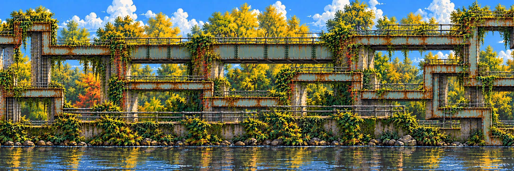
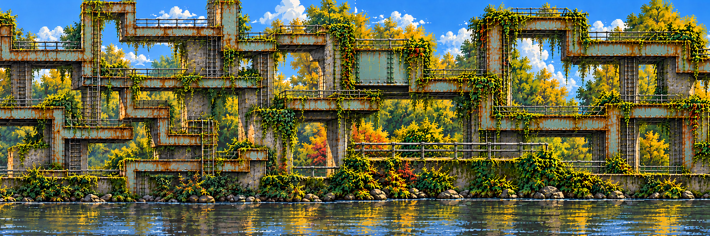

23 October · combined visual direction · review candidate
A familiar creek. An impossible route.
Keep the rivets, rust, ivy, grey rails and water. Let the bridge misbehave into tall shafts and branching platforms. The collage supplies place identity; the maze supplies the transformation.
1. Original photographic collage → newly designed side elevation
 AI-cleaned photographic board. Source locations and materials, not a map or the camera angle to reproduce.
AI-cleaned photographic board. Source locations and materials, not a map or the camera angle to reproduce. Before: flat location interpretation. The generated layout is new; the photographic perspective is discarded.
Before: flat location interpretation. The generated layout is new; the photographic perspective is discarded. After: substantial maze integrated with the creek, plants and water. Review scale and route before any collision work.
After: substantial maze integrated with the creek, plants and water. Review scale and route before any collision work.2. Pan across three banners
Loading images…
Three chunks span 6480×720 in the review coordinate system. Repair windows overlap at 0.5W and 1.5W; only their central 512-pixel bands replace pixels. Toggle repairs and mark both patch edges. Native sizes are retained in provenance and explicitly sampled for review.
Bug-out preview: one brief row-sampling/stretch transition reveals the new artwork. Reduced-motion preference uses an immediate swap. This does not move a player, alter physics or certify a connected route. Water in these master paintings is baked; the separate water plate below is a future reflection boundary.
3. Inspect the two staggered repair windows

Left–center context. Copy x=824…1336 into world x=1904…2416.
Center–right context. Copy x=824…1336 into world x=4064…4576.4. Seven center depth plates
These come from the new integrated center painting. Toggle roles or isolate one, then compare with the painted master. They are generated extraction trials: supports/traversal overlap, near rails drift, and foliage retains colored edge residue. The diagnostic deliberately exposes this; it is not a passed production decomposition.
What carries forward
Approve a recognizable center and its left/right continuation, repair joins, then approve layer registration before extrapolating those depth plates to both wings. Every future layer supplies the same ordered chunk IDs. Inserting a middle chunk creates two new neighboring joins; it never stretches old artwork.
Reflect the currently visible scene and actors through a dedicated water mask; do not reuse a fixed maze reflection after the scene changes. Decorative near rails remain separate from stand/climb/interact geometry. Individual props and collision routes still need extraction, classification and playtesting.